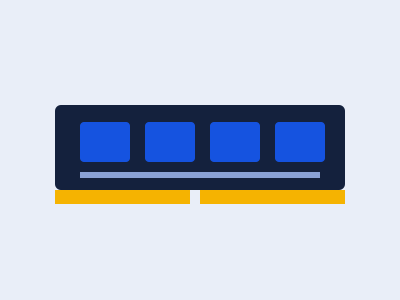

DDR4 vs DDR5: qué diferencia hay

La memoria RAM DDR5 llegó a reemplazar a la DDR4 con mayor velocidad de transferencia de datos y mejor eficiencia energética, aunque a un costo más alto.
Antes de comprar memoria nueva es importante revisar que la placa madre sea compatible con el tipo de RAM, ya que no son intercambiables entre sí: cada una usa un socket distinto en la placa.
Para un equipo pensado para durar varios años, DDR5 suele ser la mejor opción; si estás actualizando un PC que ya tiene DDR4, casi siempre conviene mantenerse en esa generación en vez de cambiar la placa madre completa.